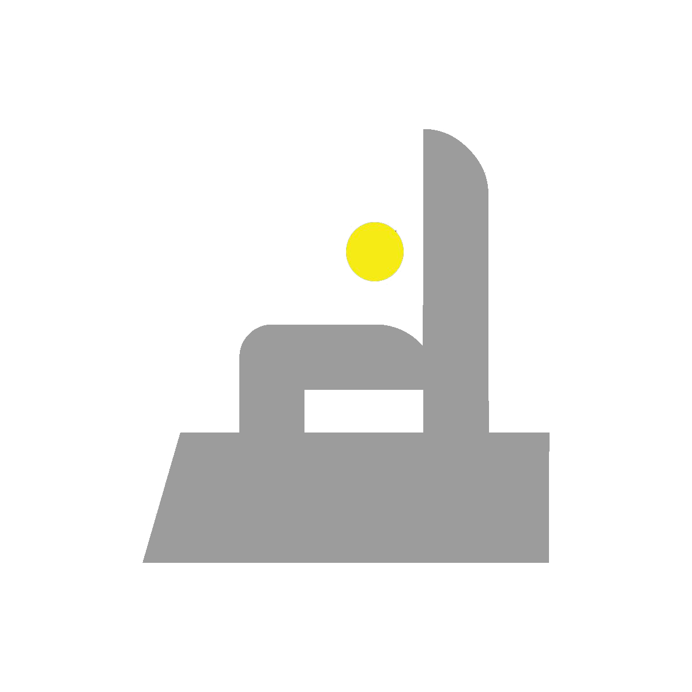
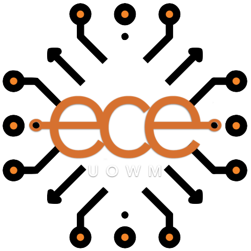
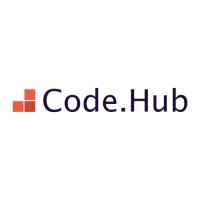

Dimitrios Samaras
SAP ABAP Engineer | Software Engineer
samarasdelta@gmail.com | +30 697 029 8386 | LinkedIn
WORKING EXPERIENCE
Associate Engineer
Netcompany
/ Dec 2025 - Present
Role: SAP ABAP Engineer / Dec 2025 - Present
SAP ABAP Developer focused on developing, maintaining, and enhancing SAP implementations, primarily across Finance and Materials Management.
- Develop custom SAP solutions using ABAP, Open SQL, ALV/SALV, Function Modules, BAdIs, Enhancements, and User Exits
- Build custom reports, validation logic, mass-upload tools, interfaces, and business-specific applications
- Develop and enhance Adobe Forms and SAP print/spool solutions, including PDF generation and document storage
- Design and maintain custom DDIC objects, including tables, structures, data elements, and search helps
- Perform debugging, root-cause analysis, testing, and technical troubleshooting across SAP environments
- Work closely with functional consultants and business users to translate requirements into reliable SAP solutions
Custom Software Engineering Analyst
Accenture
/ Mar 2024 - Nov 2025
Role: SAP ABAP Developer / Mar 2025 - Nov 2025
As an SAP ABAP Developer, I specialize in designing, developing, and maintaining custom applications and
reports within the SAP environment. I work closely with functional teams to translate business
requirements into technical solutions, ensuring optimal performance and seamless integration across SAP
modules.
Role: Business Analyst | Project: Field Service Management /
Mar 2024 - Jan 2025
Contributed to the maintenance and enhancement of a custom Field Service Management platform, ensuring
system stability, resolving client-reported issues, and supporting project testing and delivery.
- Maintained and enhanced existing implementations, addressing client tickets and delegating tasks to appropriate teams for resolution or feature development.
- Conducted manual testing and supported System Integration Testing (SIT) and User Acceptance Testing (UAT) phases to ensure system functionality and successful delivery.
- Utilized Azure SQL extensively for database management, troubleshooting, and performance optimization.
- Collaborated with clients, users, and team members to analyze issues, gather requirements, and brainstorm product enhancements.
- Participated in meetings to align on project goals, provide updates, and develop solutions for new projects.
- Coordinated daily with the team and management to monitor progress and maintain alignment with project objectives.
Junior Software Engineer
Brainbox Technology
/ May 2023 - Jan 2024
Tech stack: PHP, Laravel, NodeJS, HTML5, CSS, JavaScript, MongoDB
Focused on maintaining and improving the software for an electric
vehicle (EV) charging platform, with a primary emphasis on backend development. In that role, I
contributed to code refactoring, involving tasks like class-based implementation, code analysis, code
cleaning, testing, bug fixing, etc. I implemented the WebSocket Secure (WSS) protocol to ensure data
encryption during EV charging sessions. This involved managing SSL/TLS certificates, testing various
protocols (HTTP, HTTPS, WS, WSS), and supporting server functionality for both WS and WSS protocols
simultaneously. At that time, I was actively engaged in the implementation of the Open Charge Point
Interface (OCPI) protocol, enabling roaming charging features for EV stations across different
companies.
Tech stack: HTML5, CSS, JavaScript, Windows Server, VMware vSphere, VMware ESXi
During my military service, with primary occupational specialty
“Computer and Network Specialist” in the Information Technology Support Center of the 50th Mechanized
Infantry Brigade “Apsos” of the Hellenic Army, I was assigned the following duties:
- Micromanaging the reservist staff of the unit. Mentoring and training the new unit personnel in order to adapt and make use of their full potential in the Unit, as well as to the new office staff in IT.
- Administration and maintenance, control and monitoring of network operations and infrastructure of the Brigade's local area network (Windows Server, vSphere ESXi virtualization software).
- Technical Support for the Information Systems of the Operation Headquarters of the Brigade and the local network.
- Management and maintenance of military applications and websites.
- Creating pages using HTML, CSS and Javascript.
Software Developer (Internship)
Conferience.com
/ Apr 2021 - Jun 2021
Tech stack: ReactJS, JavaScript, HTML5, CSS, MySQL, PHP
Company's main website reconstruction with ReactJs on the Front-end, starting completely from scratch
using state of the art technologies.
- User friendly
- Fully responsive layout
- Cross-Browser compatible

Freelance Web Developer
samarasdelta
/ 2019 - 2022
Tech stack: ReactJS, NodeJS, JavaScript, HTML5, CSS, MySQL, Adobe Photoshop
- Designing and developing sites using CMS systems, Joomla and WordPress.
- Developing custom web applications for small and medium businesses.
- Communicating with customers and learning how to analyze their requirements and design an effective solution.
- Learning how to estimate the cost of a project and negotiating.
- Cooperating with graphic designers and transforming .psd files into templates.
EDUCATION

Department of Electrical & Computer Engineering
University of Western
Macedonia
/ Feb 2014 - Jun 2022
The Department caters for the fundamental education and acquisition of professional skills and
specialized knowledge in the following subject areas:
- Computer Science
- Software and Systems Technologies
- Signals, Telecommunications and Networks
- Electronics and Electrical Engineering
- Energy
CERTIFICATIONS

Full Stack Operations Software Engineer Bootcamp
SAP Generative AI Developer